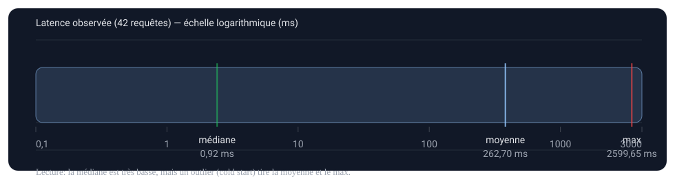

Rapport de conduite de projet AI Engineering — Credit Scoring API
1. Contexte et analyse des besoins
1.1 Organisation & contexte
- Contexte : système d’aide à la décision pour l’octroi de crédit via une API.
- Type d’organisation (scénario OpenClassrooms) : société financière fictive "Prêt à Dépenser" ; département "Crédit Express" (traitement quasi temps réel).
- Enjeux business : réduire le coût du risque tout en maintenant un taux d’acceptation cible.
- Pourquoi industrialiser : un modèle en notebook n’a de valeur métier que s’il est fiable, traçable, monitoré et maintenable en production.
- Niveau de maturité IA / MLOps : maturité intermédiaire — déploiement Docker + CI/tests + logs + monitoring ; pas encore de sécurité/alerting/retraining automatisé.
1.2 Besoin métier, recueil et méthodologie
- Besoin : estimer
P(défaut)et produire une décisionACCEPTED/REFUSEDà partir d’un seuilTHRESHOLD=0.2. - Parties prenantes (scénario OC) : Chloé Dubois (Lead Data Scientist), Michaël (manager), département Crédit Express + chargé d’études.
- KPI business : minimiser le coût d’erreur en tenant compte d’un coût FN >> FP (mission OC : FN supposé 10× FP) + suivi taux d’acceptation / taux de défaut.
- Conformité : non cadré juridiquement dans le POC (pas de DPIA, pas de politique formalisée d’accès/rétention). POC exposé publiquement et sans auth/rate-limit → points de vigilance à traiter en prod.
Méthodologie (recueil & analyse) — adaptée à un POC
- Recueil : analyse documentaire (brief + consignes) + clarification des objectifs (business/tech) + revue de la solution cible (API/logs/monitoring) pour faire émerger les exigences non-fonctionnelles.
- Analyse : formulation en items testables (fonctionnels + non-fonctionnels) + identification des contraintes (sécurité, conformité, exploitation).
- Justification : prioriser fiabilité/traçabilité (tests/logs/monitoring) pour rendre le système mesurable, puis durcir sécurité/alerting/retraining en itérations.
Axes de réalisation
- Exposer le modèle via une API stable.
- Automatiser les tests et le déploiement.
- Mettre en place du monitoring.
- Analyser et optimiser les performances.
1.3 Backlog de besoins & priorisation
| ID | Besoin | Dimension | Type | Priorité | Critère d’acceptation (extrait) |
|---|---|---|---|---|---|
| B1 | Prédire P(défaut) et retourner une décision ACCEPTED/REFUSED via API |
Métier | Fonctionnel | Must | POST /predict répond 200 + champs attendus + décision par seuil |
| B2 | API stable + documentée | Tech | Non-fonctionnel | Must | Swagger /docs + GET /health |
| B3 | Validation d’entrée + gestion d’erreurs | Tech | Non-fonctionnel | Must | 422 sur input invalide ; erreurs système séparées |
| B4 | Traçabilité (logs structurés) | Exploitation | Non-fonctionnel | Must | log JSONL : request_id, latency_ms, status_code |
| B5 | Suivi performance (latence) | Exploitation | Non-fonctionnel | Should | KPI latence calculables + détection outliers |
| B6 | Monitoring drift (signal de dérive) | Métier/Exploit. | Non-fonctionnel | Should | test KS sur distribution scores + rapport |
| B7 | Sécurité (auth + rate-limit) | Tech/Orga | Non-fonctionnel | Could (POC) | endpoints protégés ; limitation d’usage |
| B8 | Conformité (RGPD, rétention logs, minimisation) | Réglementaire | Non-fonctionnel | Should | politique de rétention + redaction PII dans logs |
| B9 | Coûts & capacité (infra, stockage logs) | Business/Tech | Non-fonctionnel | Should | estimation ordre de grandeur + variables de chiffrage |
Priorisation (valeur/effort) — lecture rapide
| Groupe | Valeur métier | Effort | Décision |
|---|---|---|---|
| B1–B4 | Élevée | Moyen | 1ère itération (POC) : rendre le service stable, testable et traçable |
| B5–B6 | Élevée | Moyen | 2e itération : observabilité (latence + drift) et diagnostic |
| B8–B9 | Moyenne → Élevée | Moyen | Avant prod : conformité + chiffrage |
| B7 | Élevée | Élevé | Itération “durcissement” : auth, rate limit, secrets, redaction |
2. Solution (POC)
- API FastAPI :
GET /health,POST /predict+ validation Pydantic. - Modèle : chargé au démarrage (startup) et conservé en mémoire ; artefact joblib téléchargé depuis Hugging Face Hub (
perachon/credit-scoring-model,lightgbm_api_pipeline.pkl) avec cache Hugging Face. - Déploiement : Docker ; Uvicorn écoute sur
7860dans le conteneur ; déploiement sur Hugging Face Spaces. - CI/CD : GitHub Actions (pytest → build Docker → push HF Space).
- Logs : JSONL request-level + événements
prediction/validation_error(ex.logs/api_requests.jsonl).
2.1 Démarche d’audit (méthodologie)
Objectif : évaluer l’adéquation POC ↔ besoins sur 4 axes : (1) robustesse API/contrat, (2) traçabilité, (3) performance/latence, (4) risques (sécurité, conformité, biais).
- Définir le périmètre : endpoints, schéma d’entrée, décision (seuil).
- Audit API/robustesse : tests (pytest), validation Pydantic, codes d’erreurs.
- Audit observabilité : inspection logs JSONL (champs, volumétrie, doublons de
request_id). - Audit performance : métriques latence + profiling (
cProfile) pour isoler un goulot. - Audit drift : Evidently + test KS sur la distribution des probabilités.
- Audit risques : checklist POC vs prod (auth/rate-limit, rétention logs, DPIA, fairness).
2.2 Évaluation de l’adéquation aux besoins
- Robustesse : validation Pydantic + tests automatisés.
- Sécurité : pas d’auth/rate-limit (écart par rapport à une prod).
- Coût : estimation partielle (ordre de grandeur) + méthode de chiffrage (cf. section 5.3). Drivers principaux : compute CPU, cold start/téléchargement modèle, stockage/rotation des logs, hébergement.
Écarts / limites (POC)
- Gouvernance data : non formalisée dans le POC (pas de data contract, pas de contrôles qualité systématiques, pas d’analyse fairness documentée). Droits/licence exacts de la source du dataset.
- Observabilité : monitoring présent (latence + drift), mais pas de dashboard/alerting.
Logging vs monitoring : le logging stocke les événements ; le monitoring analyse ces événements pour détecter des anomalies.
3. Mapping besoins ↔ solution ↔ écarts
| Besoin | Implémentation POC | État | Commentaire |
|---|---|---|---|
| B1 (prédire + décider) | POST /predict + seuil THRESHOLD=0.2 |
OK | Relier le seuil à un score métier (coût FP/FN) pour justifier la décision |
| B2 (API stable) | FastAPI + /docs + /health |
OK | Démontrable en public (Spaces) |
| B3 (validation) | Pydantic + tests | OK | Erreurs input (422) distinguées |
| B4 (logs structurés) | JSONL request-level | OK | Prévoir redaction/rotation en prod |
| B5 (latence) | KPI via logs | Partiel | Outliers présents → traiter cold start / warmup |
| B6 (drift) | Evidently + KS sur scores | Partiel | Signal OK ; étendre à drift features + impact sur métriques |
| B7 (sécurité) | Non implémentée | Non (POC) | À ajouter avant prod (auth/rate-limit/secrets) |
| B8 (RGPD/rétention) | Non formalisé | Non (POC) | À cadrer (DPIA, rétention, minimisation, redaction logs) |
| B9 (coûts/capacité) | Chiffrage fournisseur à renseigner | Partiel | Méthode + variables + hypothèses trafic (cf. 5.3) |
3.2 Solution technique cible (sécurité, conformité, scalabilité, coûts)
- Sécurité : authentification (API key/OAuth), rate limiting, gestion des secrets (CI secrets/vault), durcissement CORS et protection des endpoints.
- Conformité/RGPD : minimisation des données, redaction/anonymisation dans les logs, politique de rétention (ex. 30 jours), et DPIA si données personnelles réelles.
- Scalabilité : service stateless + autoscaling, cache de l’artefact modèle, warmup au démarrage pour réduire les cold starts.
- Coûts : chiffrage à partir des unités (CPU-heures, GB logs, egress) avec hypothèses de trafic ; arbitrages (latence vs coût).
- Observabilité : dashboard (latence/erreurs/drift) + alerting + runbook (cadence de revue et actions).
3.3 Cas d’usage (identification, description, priorisation)
| Cas d’usage | Description | Valeur | Complexité | Priorité |
|---|---|---|---|---|
| UC1 — Scoring temps réel | Requête → score + décision ACCEPTED/REFUSED |
Élevée | Moyenne | Must |
| UC2 — Traçabilité / audit | Logs structurés (request_id, latence, statut, événements) |
Élevée | Moyenne | Must |
| UC3 — Monitoring & itération | Détection drift/latence anormale + déclenchement revue | Élevée | Moyenne | Should |
| UC4 — Durcissement sécurité | Auth + rate-limit + redaction + rétention | Élevée | Élevée | Could (POC) / Should (prod) |
Méthode : priorisation valeur/effort (impact métier + risques), alignée avec le contexte (API exposée, contraintes latence, exigence de traçabilité).
4. Jalons, livrables, ressources (estimation)
- J1 — Cadrage : backlog priorisé (B1–B9) + critères d’acceptation + risques.
- J2 — API & contrat : endpoints + schéma d’entrée + tests critiques.
- J3 — CI/CD : pipeline vert (tests) + build Docker + déploiement.
- J4 — Observabilité : logs structurés + scripts KPI + rapport drift.
- J5 — Revue Go/No-Go : KPI vs SLO + plan durcissement (sécurité/conformité).
Ressources (ordre de grandeur, POC)
- AI Engineer / MLOps : 4–7 jours (API, packaging, CI, logs, monitoring POC).
- Data Scientist : 1–2 jours (KPI ML, seuil, analyse dérive).
- Référent métier : 0,5–1 jour (validation coûts FP/FN, critères business).
- Conformité/sécurité : 0,5–1 jour (exigences d’accès, rétention, redaction).
5. Contrôle, KPI & suivi
| KPI | Objectif (SLO / règle) | Valeur observée (POC) | Statut | Notes |
|---|---|---|---|---|
Latence médiane /predict |
< 50 ms | 0,92 ms | OK | Médiane excellente |
Latence moyenne /predict |
< 200 ms | 262,70 ms | Partiel | Moyenne tirée par un outlier (cold start) |
Latence max /predict |
< 1500 ms | 2599,65 ms | Non | Outlier à traiter (warmup/cache, chargement modèle) |
| Drift scores (KS) | p-value < 0,05 = drift (déclencheur) | p-value ≈ 0,015873 → drift | OK | Signal à investiguer (taille échantillon, impact perf) |
| Qualité modèle (AUC) | AUC ≥ 0,75 (POC) | ~0,77 (comparatif CV) | OK | À compléter par KPI business (taux défaut/acceptation) |

Extraits mesurés
- Latence /predict (42 requêtes) : mean 262,70 ms ; median 0,92 ms ; min 0,45 ms ; max 2599,65 ms.
- Qualité logs : 42 lignes /predict ; 40
request_iduniques (doublons présents). - Drift (Evidently, K‑S) : drift sur
probability_default— p-value ≈ 0,015873 (< 0,05),dataset_drift=true(cf.drift_report.json). - Plan d’action drift : analyser features contributrices, vérifier impact sur métriques, puis retraining/recalibration → revalidation → redéploiement CI/CD.
5.2 Outils et process de suivi
- Tests : exécution en CI.
- Monitoring : scripts latence/drift + rapports Evidently.
- Analyse performance : identification du goulot via
cProfile. - Process : non formalisé dans le POC (pas de cadence revue drift définie ; pas de runbook).
5.3 Estimation infra / coûts (ordre de grandeur)
- Compute : 1 service API CPU (container) + mémoire pour charger le modèle.
- Stockage logs (ordre de grandeur) : si 1 ligne JSONL ≈ 1–2 KB et 10 000 requêtes/jour → 10–20 MB/jour → 0,3–0,6 GB/mois.
- Coût “à renseigner” : coût = (CPU-heures × prix CPU) + (GB logs × prix stockage) + (egress × prix réseau).
- Décision prod : définir une politique de rétention (ex. 30 jours) + rotation, et redacter/anonymiser les champs sensibles.
6. Risques & impacts + mitigation (POC)
- Légal/réglementaire : DPIA RGPD non réalisé (hors périmètre POC) ; à cadrer si données personnelles réelles + politique d’accès/rétention.
- Sécurité : API publique en démo sans auth/rate-limit → risque d’abus, d’exfiltration et de coût.
- Éthique / biais : fairness non documenté ; vigilance sur variables sensibles et impacts d’un refus “automatisé”.
- Business : un seuil mal calibré dégrade coût FP/FN ou taux d’acceptation ; nécessité d’un KPI métier et d’une revue.
- Organisation : intégration au workflow (chargé d’études) + capacité à expliquer la décision et gérer les contestations.
Recommandations décisionnelles (extraits)
- Formaliser un Go/No-Go : SLO latence (p95), KPI business (coût FP/FN, taux d’acceptation), critères de rollback.
- Avant prod : auth + rate-limit, redaction logs + rétention, et checks fairness si variables sensibles.
- Drift : étendre aux features + impact sur métriques (AUC/recall), définir runbook (cadence, seuils, actions).
Liens
- Démo : Swagger /docs
- Code (GitHub) : GitHub
- Repo (Spaces) : Hugging Face